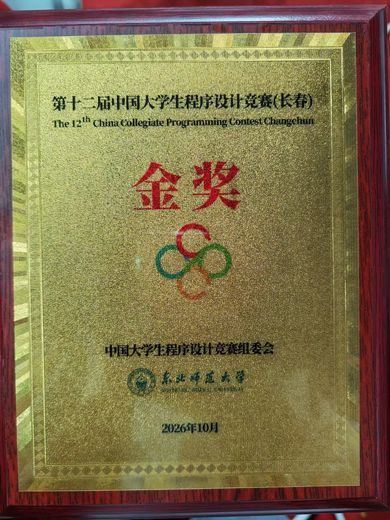
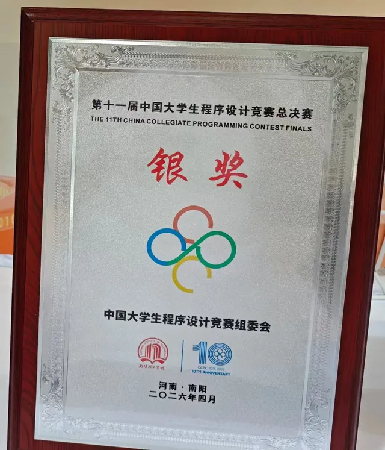
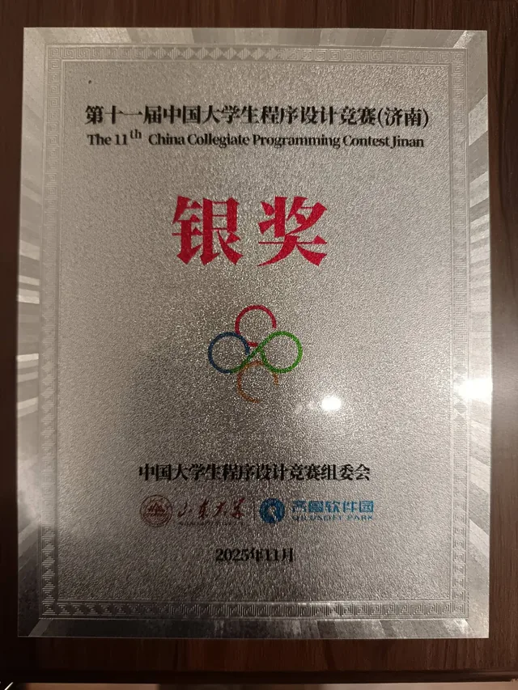
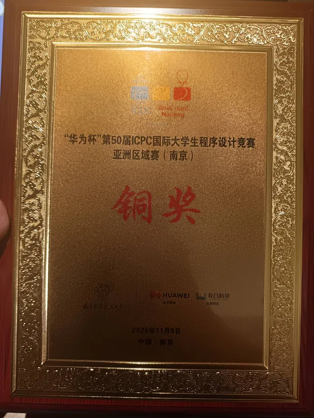
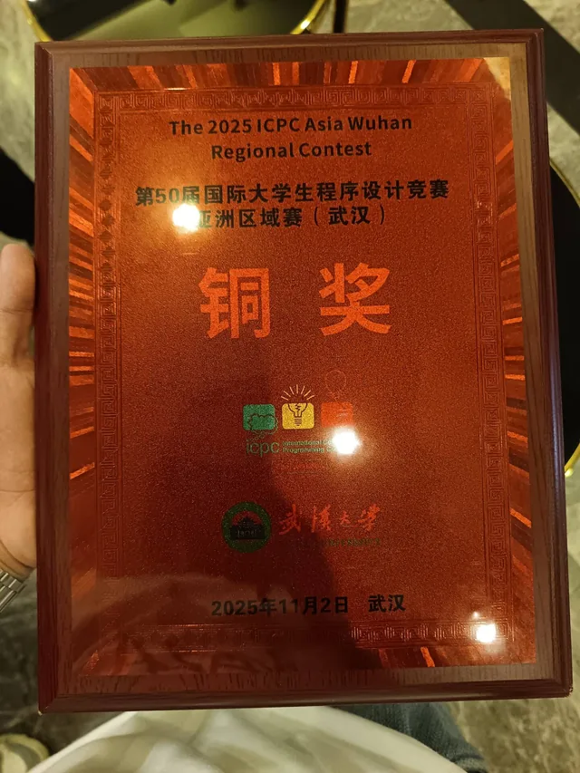

Algorithms · ACM
ICPC 国际大学生程序设计竞赛与 CCPC 中国大学生程序设计竞赛的获奖记录。 每一块奖牌都来自一场五个小时、三个人、一台电脑的比赛。

CCPC长春 · 2026 年 10 月

CCPC河南南阳 · 2026 年 4 月

CCPC济南 · 2025 年 11 月

ICPC南京 · 2025 年 11 月 9 日

ICPC武汉 · 2025 年 11 月 2 日